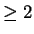

Since revision 1.1 JacORB provides support for Portable Interceptors These interceptors are compliant to the specification which can be found at http://cgi.omg.org/cgi-bin/doc?ptc/00-03-03. Therefore we don't provide any documentation on how to program interceptors but supply a few (hopefully helpful) hints and tips on JacORB specific solutions.
The first step to have an interceptor integrated into the ORB is to register an ORBInitializer. This is done by setting a property the following way:
org.omg.PortableInterceptor.ORBInitializerClass.<any_suffix>= <orb initializer classname>The suffix is just to distinguish between different initializers and doesn't have to have any meaningful value. The value of the property however has to be the fully qualified classname of the initializer. If the verbosity is set to  JacORB will display a ClassNotFoundException in case the initializers class is not in the class path.
An example line might look like:
org.omg.PortableInterceptor.ORBInitializerClass.my_init= test.MyInterceptorInitializer
Unfortunately the interfaces of the specification don't provide any access to the ORB. If you need access to the ORB from out of the initializer you can cast the ORBInitInfo object to jacorb. orb.portableInterceptor.ORBInitInfoImpl and call getORB() to get a reference to the ORB that instantiated the initializer.
When working with service contexts please make sure that you don't use java.lang.Integer. MAX_VALUE as an id because a service context with that id is used internally. Otherwise you will end up with either your data not transfered or unexpected internal exceptions.